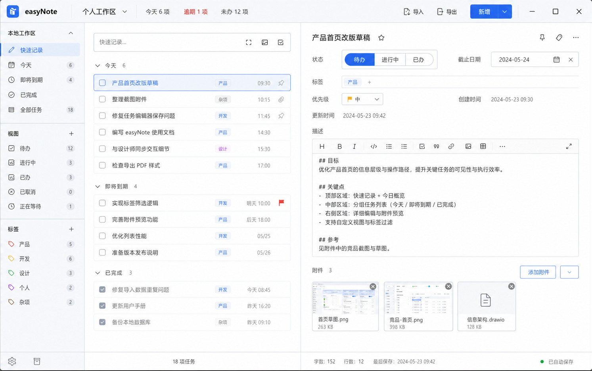

保持图 2 的三栏比例、紧凑密度和浅色工具型视觉

品牌、工作区菜单、今日/逾期/未办统计、导入导出、新增下拉和原生窗口控制。新增按钮创建今日待办，下拉可创建无日期任务。
快速记录、今天、即将到期、已完成、全部任务；下方提供五个状态视图和标签视图，所有数量实时派生。
输入标题后按 Enter 创建今日待办；图片按钮创建任务后立即选择图片；任务按钮创建无日期待办；展开按钮聚焦快速录入区。
快速记录视图按“今天 / 即将到期 / 已完成”分组；其他视图保持相同紧凑行结构。勾选框即时切换完成状态，图标显示置顶、附件和优先级。
标题直接编辑；状态使用分段控件；日期、标签、优先级就地修改；右上角提供置顶、标签聚焦与更多菜单（删除）。
Tiptap 工具栏支持标题、粗体、斜体、代码、列表、任务列表、引用、链接、图片和表格；编辑内容直接渲染，不显示 Markdown 源码。
卡片展示预览、名称和大小；悬停显示删除；点击图片查看原图，点击其他文件由系统默认应用打开。
左侧显示当前视图任务数；右侧显示字数、段落数、最后保存时间和自动保存状态。